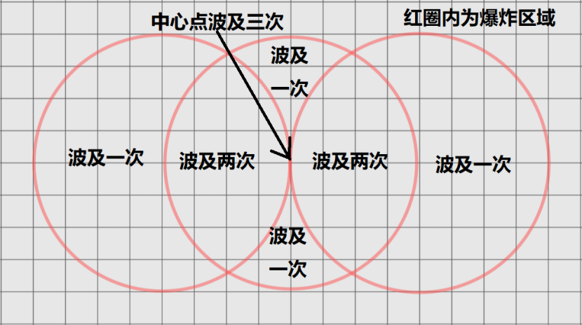

心中有剑
先决条件：能够施展“心灵之楔Mind Sliver”“塔莎心灵鞭Tasha’s Mind Whip”“劳洛希姆心灵长枪Raulothim's Psychic Lance”之一，并将其作为准备法术或已知法术
当你施展“心灵之楔”“塔莎心灵鞭”“劳洛希姆心灵长枪”后，你一只空余的手中出现了同名的魔法武器。当你使用该武器发动了两次攻击，或是1分钟后，武器会消失。你视为具有该武器的熟练项。武器数据见下。
心灵之楔
武器（匕首），非卖品
你可以用一个附赠动作，以该武器发动一次攻击。心灵之楔命中后造成心灵而非穿刺伤害，命中生物时，目标需要进行一次智力豁免，豁免失败则其在你的下个回合结束前的下一次豁免中承受1d4减值。
塔莎心灵鞭
武器（鞭），非卖品
你可以用一个附赠动作，以该武器发动一次攻击。塔莎心灵鞭命中后造成心灵而非挥砍伤害，命中生物时，目标需要进行一次感知豁免，豁免失败则在你的下个回合结束前陷入恍惚。
劳洛希姆心灵长枪
武器（矛），非卖品
你可以用一个附赠动作，以该武器发动一次攻击。劳洛希姆心灵长枪命中后造成心灵而非穿刺伤害，命中生物时，目标需要进行一次智力豁免，豁免失败则在你的下个回合结束前陷入失能。如果你在使用劳洛希姆心灵长枪攻击一个生物的同时，说出了该生物的真名，这次攻击不会因为无法看见目标而具有劣势。
剑艺
先决条件：能够施展“轰雷剑Booming Blade”“翠炎剑Green-Flame Blade”“法兰快剑Farron Rapier”之一，并将其作为已知戏法
你掌握的“轰雷剑”变为“真·轰雷剑”，“翠炎剑”变为“真·翠炎剑”，“法兰快剑”变为“真·法兰快剑”。使用你的角色总等级而非盗贼等级，决定这些戏法的伤害成长。
无解诅咒
先决条件：能够施展具有“诅咒Curse”标签的法术之一，并将其作为准备法术或已知法术
你施展的具有“诅咒Curse”标签的法术，法术豁免DC+1。这些法术无法被“解除法术”或类似效应所解除。
不可饶恕咒
先决条件：能够施展“律令痛苦Power Word Pain”“支配人类Dominate Person”“索命咒Avada Kedavra”之一，并将其作为准备法术或已知法术
你的黑魔法变得更加强大，难以被抵抗。
·受到你的“律令痛苦”影响的生物，无法在自己的回合结束时重新豁免以终止此法术。5环或更高环阶的“移除诅咒”可以终止此法术。
·你的“支配人类”的持续时间变为之前的10倍，并且无法被“解除法术”或类似效应解除。
·你的“索命咒”的伤害增加2d10点，你使用“索命咒”杀死的生物无法被弱于“祈愿术”的效应复活。
左右互搏
先决条件：能够施展“法师之手Mage Hand”“麦克斯米利安的地之攫Maximilian's Earthen Grasp”“能量爪Energy Claw”“毕格比之手Bigby's Hand”之一，并将其作为准备法术或已知法术
你运用双手发起攻势，交替使用左重拳和右重拳，右重拳的攻击会跟随左重拳一起快速打出。
当你施展“法师之手”“麦克斯米利安的地之攫”“能量爪”“毕格比之手”时，你能够在施法距离内两个不同的位置塑造两只手。每当你后续使用动作或附赠动作来指挥这些法术时，你可以让两只手一起受到指挥。
蹦蹦炸弹
先决条件：能够施展“火球术Fireball”“焰击术Flame Strike”“阳炎爆Sunburst”之一，并将其作为准备法术或已知法术
施展“火球术”“焰击术”“阳炎爆”时，在法术的初次爆炸之后，你可以让爆炸中心向远离你的方向弹跳两次，每次弹跳的距离等同于爆炸半径，每次弹跳后产生一场新的爆炸。一个生物或物件被多次连续爆炸波及时，需要进行多次豁免，取其中豁免结果最低的一次，来计算此法术对它产生的一次爆炸影响，忽略其它爆炸对它造成的影响。
举例来说，可莉施展了“火球术”，其施法距离为150尺，爆炸半径为20尺，她可以在距离她150尺、170尺、190尺的空间内三个点，依次制造爆炸。一只丘丘人被三次爆炸都波及到了，它进行三次敏捷豁免，两次成功一次失败，那么它视为对抗“火球术”的豁免失败，受到8d6点火焰伤害。

缭乱斩
先决条件：能够施展至少一个具有“斩Smite”标签的法术，并将其作为准备法术或已知法术
你可以用一个附赠动作，施展两个不同的具有“斩Smite”标签的法术。
当你消耗法术位施展具有“斩Smite”标签的法术后，你将恢复用于施展此法术所实际消耗的法术位。在每两次长休之间，你最多通过此专长恢复每个环阶的法术位各一个。
//具有“斩Smite”标签的法术共10个，都在圣武士的法术列表上：
炽焰斩Searing Smite、雷鸣斩Thunderous Smite、激愤斩Wrathful Smite、印记斩Branding Smite、致盲斩Blinding Smite、惊惧斩Staggering Smite、破法斩Dispel Smite、放逐斩Banishing Smite、残影斩Ghost Smite、虚空斩Ether Smite。
注意，钢风斩Steel Wind Strike不具有“斩Smite”标签。
万箭穿心
先决条件：能够施展“召唤箭雨Conjure Barrage”“万箭齐发Conjure Volley”之一，并将其作为准备法术或已知法术
你施展的“召唤箭雨”“万箭齐发”，可以采用敏捷作为施法关键属性、采用你持握的武器作为法器。其法术豁免DC=8+熟练加值+敏捷调整值+你持握的武器在攻击检定上的额外加值。
如果一个生物对抗你的“召唤箭雨”“万箭齐发”的敏捷豁免失败，那么你对它发动的远程武器攻击具有优势，持续到你的远程武器攻击命中了它为止。
如果你发动的远程武器攻击命中了一个生物，那么它对抗你的“召唤箭雨”“万箭齐发”的敏捷豁免具有劣势，持续到它对抗其中某个法术的敏捷豁免失败为止。
百宝箭袋
先决条件：能够施展“迅捷箭袋Swift Quiver”，并将其作为准备法术或已知法术
你的箭袋能够凭空创造出特殊的弹药供你使用。
你施展“迅捷箭袋”时发动的两次远程武器攻击，以及在法术的持续时间内使用附赠动作发动的两次远程武器攻击，将会具有特殊弹药的效果，由你从单价不能超过333gp的魔法弹药中选择（详见“魔法物品-武器-远程”章节）。
在你的攻击结算完成后，这些被发射的弹药失去魔法效果。
夺取真名
先决条件：能够施展“抹除真名Unname”，并将其作为准备法术或已知法术
当你成功抹除一个生物的真名后，你可以将自己的真名修改为这个生物的真名。如果你不愿意继续扮演这个生物，你也可以将真名改回自己原本的真名，但改回去以后，便不能反悔了。
从此以后，你代替了目标在世界上的存在性——它的财产被误认为是你的财富，它的手稿被误认为是你所做，它的事迹被误认为是你所完成，它的伴侣相信你是相伴了半生的恋人，它的孩子认为自己是你的儿女，它的王国以为被你所统治。如果目标复活，与目标亲近的生物将会意识到，你是一个夺取了真名的伪造者。
魔法增幅斗士
先决条件：能够施展“神能Divine Power”“谭森变形术Tenser's Transformation”“塔莎超凡形态Tasha’s Otherworldly Guise”“饥渴魔刃Thirsting Blade”之一，并将其作为准备法术或已知法术
你消耗法术位施展的“神能”“谭森变形术”“塔莎超凡形态”“饥渴魔刃”，视为以你拥有的最高环法术位所施展，而只需花费基础环阶的法术位。
门之钥
先决条件：能够施展“秘法门Arcane Gate”“异界之门Gate”之一，并将其作为准备法术或已知法术
窥探了禁忌的门扉后，你获得了开启宇宙万物的钥匙。你的“秘法门”和“异界之门”获得了新的用法，详见下文。
秘法门之钥
当你施展“秘法门”时，你可以让法术的效果改为：在施法距离内一点，你打开一扇传送门；而传送门的另一头，连接着当前位面的一个危险区域，这些危险区域的物质，从传送门中喷涌而出。可选的危险区域包括：
·深海。传送门中涌出半径100尺的高压水流，形成水域方格。
在水流区域中开始回合，或是在某个回合中首次进入该区域的生物，需要进行一次力量豁免。豁免失败则受到6d8点钝击伤害，并被击退100尺，豁免成功则伤害减半，且不会被击退。
在你的回合结束时，水流区域内未被着装或携带的物件，受到等量伤害，未被牢固固定的物件也会被击退到水域方格的边缘。
·雷云。传送门中涌出半径30尺的雷云，形成重度遮蔽。
在雷云区域中开始回合，或是在某个回合中首次进入该区域的生物，需要进行一次敏捷豁免。豁免失败则受到9d8点闪电伤害，且失去一个反应，豁免成功则伤害减半，且不会失去反应。
在你的回合结束时，雷云区域内未被着装或携带的物件，受到等量伤害，依靠电力作为能源运转的、非神器的物件还会损坏。
·地心。传送门中涌出半径10尺的岩浆，形成明亮照明。
在岩浆区域中开始回合，或是在某个回合中首次进入该区域的生物，需要进行一次体质豁免。豁免失败则受到12d8点火焰伤害，豁免成功则伤害减半。
在你的回合结束时，岩浆区域内未被着装或携带的物件，受到等量伤害，可燃物还会被点燃。
岩浆会在传送门关闭时、或是受到寒冷伤害后、或是遇到水后，凝固为岩石。
异界门之钥
当你施展“异界之门”时，你可以让法术的效果改为：在施法距离内一点，你打开一扇位面传送门；而传送门另一头，连接着另一个位面的危险区域，这些危险区域的物质，从传送门中喷涌而出。可选的危险区域包括：
·秽液沼泽。传送门中涌出半径100尺的，来自无底深渊的秽液沼泽，形成困难地形。
在秽液区域中开始回合，或是在某个回合中首次进入该区域的生物，需要进行一次感知豁免。豁免失败则受到20d10点暗蚀伤害，豁免成功则伤害减半。生物的最大生命值，也会降低等同于自身受到的暗蚀伤害的数值。
·冥河。传送门中涌出半径30尺的，来自九层地狱的冥河，形成水域方格。
在冥河区域中开始回合，或是在某个回合中首次进入该区域的生物，需要进行一次智力豁免，豁免失败则变为一个弱智。
该生物承受若干点智力属性损伤，直至其智力降低为1。此外，该生物将不能施法、不能维持专注、不能启动魔法物品，甚至不能听懂语言或以智慧方式沟通。但该生物仍可以辨识、跟随伙伴，甚至保护他们。
该生物每过30日即可在当日结束时重新进行一次豁免，豁免成功则弱智的效应终止。“高等复原术”或“医疗术”可直接终止弱智的效应。
·黑洞。传送门中涌出半径5尺的，来自星界的黑洞，形成异常重力区域。
以黑洞为中心，半径100尺内的区域，重力方向改为朝向黑洞中心，同时重力增加六倍（对于常规环境而言，变成了七倍重力）。异常重力带来的影响，详见“世界-环境与陷阱-异常重力”。
在黑洞中心开始回合，或是在某个回合中首次进入黑洞中心的生物，需要进行一次力量豁免，豁免失败则受到12d10点力场伤害，并陷入束缚状态，直到其离开黑洞中心。豁免成功则伤害减半，且不会被束缚。
一个生物能以其动作进行一个对抗你的法术豁免DC的力量检定，若成功则能解除其自己或者另一个在其触及范围内的，黑洞中心内的生物的束缚状态。
//此专长产生的危险区域，不是魔法性的效果，而是联通了一个天然存在的危险区域。此专长描述中的伤害，也不是法术造成的伤害。
宇宙中天然存在的危险区域，当然不止此专长描述中的六个。你可以与你的DM沟通，看看传送门还可能联通哪些区域。
四季敕令
先决条件：能够施展“元素伎俩Element Cantrip”，并将其作为已知戏法
联系着自然元素，你让四季响应你的敕令。你获得了不同的动作选项，它们是非法术的魔法性能力。如果某些能力需要豁免，则豁免DC=你的法术豁免DC。
拂春风
你可以用一个动作，选择60尺内的空间中一点作为起点，向一个由你选择的方向吹出直线型的强风。强风宽10尺、长度最多为“施法关键属性调整值×10尺”。在春季施展的“拂春风”，强风宽度由10尺增加到20尺。
强风路径上的生物和未被固定的物件，需要进行一次力量豁免，豁免失败则被击退到路径的终点。
通夏火
你可以用一个动作，选择60尺内的空间中一点，向一个由你选择的方向延伸出直线型的火墙，持续1分钟。火墙高10尺、厚1寸、长度最多为“施法关键属性×10尺”。在夏季施展的“通夏火”，火墙高度由10尺增加到20尺。
火墙是不透明的、可穿越的墙体。产生10尺明亮照明和再向外延伸10尺的昏暗照明。一个生物在某个回合内首次穿越火墙，需要进行一次敏捷豁免，豁免失败则受到1d6×熟练加值点火焰伤害，豁免成功则伤害减半。未被着装或携带的物件，穿越火墙时也会受到等量伤害。
起秋尘
你可以用一个动作，选择60尺内的空间中一点，创造出半径10尺的烟尘，形成重度遮蔽，持续到你的下个回合结束。在秋季施展的“起秋尘”，烟尘半径由10尺增加到20尺。
一阵强风可以提前吹散烟尘。
漫冬雪
你可以用一个动作，选择60尺内的空间中一点，创造出半径10尺的霜雪，形成困难地形，持续到你的下个回合结束。在冬季施展的“漫冬雪”，霜雪半径由10尺增加到20尺。
一个生物在霜雪中开始自己的回合，或是在某个回合内首次进入霜雪区域，需要进行一次体质豁免，豁免失败则本回合的剩余移动速度降为0。陷入霜雪区域的载具，同样会减速。
//某些位面、星球、地区，没有季节之分。在这些地方，四季敕令就永远不会得到季节的增幅。
刑罚
先决条件：能够施展“定罪Guiltiness”，并将其作为准备法术或已知法术
当你施展“定罪”时，选择以下刑罚之一，在法术持续时间内产生对应效果。
流刑：每当目标触发定罪，在触发定罪的游戏效应结算完毕以后，你使其向一个由你选择的方向击退“目标本回合内已经触发定罪次数×5”尺。
徒刑：目标陷入锚定和缚地状态。
绞刑：若目标同一回合触发三次定罪效果，需要进行一次体质豁免，若失败则陷入窒息状态并无法说话。该目标每回合开始时可以再次进行体质豁免，豁免成功则摆脱该状态。
死刑：目标对定罪造成的伤害具有易伤。若目标的生命值因为定罪的伤害降为0，目标会死亡。
闪现钢风斩
先决条件：能够施展“钢风斩Steel Wind Strike”，并将其作为准备法术或已知法术
你施展“钢风斩”时，可以将其强化。此专长是一种“充能6”的能力。使用此专长后，每个你的回合开始时，你骰一枚d6，若结果为6，你可以再次使用此专长。
强化版的“钢风斩”，法术效果修改如下：
你忽然消失，传送进入以太位面，并将在你的下个回合开始时，伴随着一阵如钢铁的疾风，返回原来的位面。当你返回原来的位面时，你选择施法距离内最多5个可见生物。向每个生物分别进行一次近战武器攻击。若命中，除了武器攻击本身的效果以外，目标还会额外承受4d10力场伤害。如果你仅选择了一个目标，改为8d10力场伤害。
在这之后，你选择一个你击中或未击中的生物周围5尺内，你可以看见的未被占据的空间，作为你返回原来的位面后的位置。
升环施法效应：使用六环或更高环阶的法术位施展此法术时，如果你选择了多个目标，则你使用的法术位每比五环高一环，伤害就增加1d10；如果你仅选择了一个目标，则你使用的法术位每比五环高一环，伤害就增加2d10。
//当你身处“以太位面”时，无法施展这种强化版的“钢风斩”。
冰火两重天
先决条件：能够施展“流星爆Meteor Swarm”和“冰山撞Iceberg Crash”，并将它们都作为准备法术或已知法术
你可以用一个动作，对相同的地点同时施展“流星爆”和“冰山撞”，结算顺序自选。
攻防一体的艺术品
先决条件：能够施展“攻击预知Prescience of Attack”和“防御预知Prescience of Defense”，并将它们都作为准备法术或已知法术
你可以用一个附赠动作，同时施展“攻击预知”和“防御预知”，结算顺序自选。
暴雨射线
先决条件：能够施展“魔能爆Eldritch Blast”“吉姆的魔法飞弹Jim's Magic Missile”“风刃术Wind Blade”“灼热射线Scorching Ray”之一，并将其作为准备或已知法术
你可以为你的“魔能爆”“吉姆的魔法飞弹”“风刃术”“灼热射线”添加“法术分裂”或“群体法术”的超魔专长。此时，这些法术将对你选择的每一个目标，依次发射最大次数的射线。
举例来说，17级契术师使用暴雨射线、法术分裂、群体法术的“魔能爆”时，可以对射程内每个敌人各射出4条射线。
//这个专长本身并不给予你使用“法术分裂”和“群体法术”的能力。你仍然需要自己再花费专长位去选择。
闪电穿梭
先决条件：能够施展“电子穿梭Electronic Shuttle”，并将其作为准备法术或已知法术
你化作的高能电子束，会在移动轨迹上产生电荷的爆裂。
你施展“电子穿梭”以直线移动穿过的生物需要进行敏捷豁免，豁免失败则受到“2d8×此法术环阶”点闪电伤害，豁免成功则伤害减半。
束缚空间
先决条件：能够施展“纠缠术Entangle”“蛛网术Web”“艾伐黑触手Evard’s Black Tentacles”之一，并将其作为准备法术或已知法术
你施展的“纠缠术”“蛛网术”“艾伐黑触手”束缚了一个生物时，该生物同时陷入锚定状态。
造水枯水大师
先决条件：能够施展“造水/枯水术Create or Destroy Water”，并将其作为准备法术或已知法术
你施展的“造水术”可以创造出高浓度的电解质溶液。此法术区域内的生物需要进行敏捷豁免，豁免失败则对魔法效应造成的闪电伤害具有易伤，持续到你的下个回合结束。
你施展的“枯水术”可以抽离生物的水分使其更易燃。此法术区域内的生物需要进行体质豁免，豁免失败则对魔法效应造成的火焰伤害具有易伤，持续到你的下个回合结束。
//使用魔法武器发动攻击，不属于魔法效应。因此，即使一次武器攻击可以造成闪电或火焰伤害，也无法享受此专长带来的易伤。